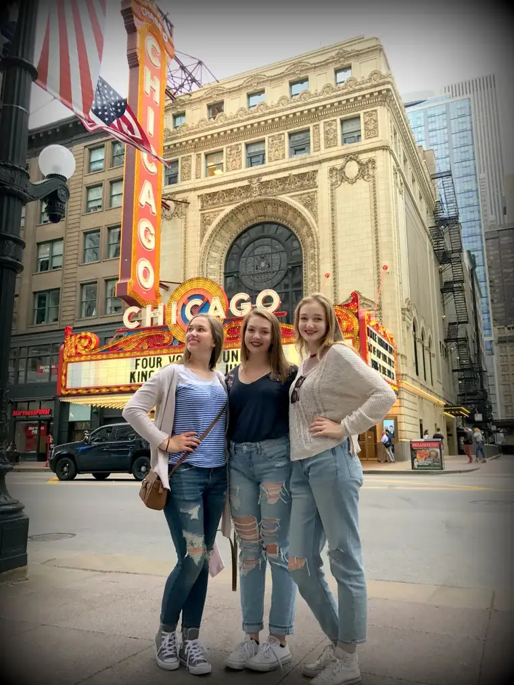
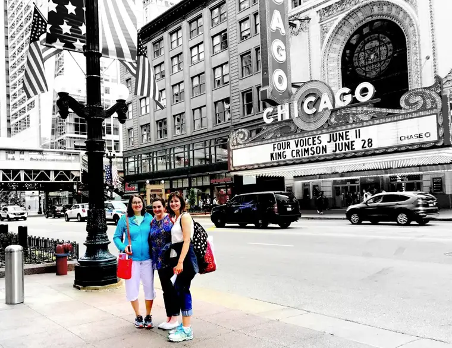
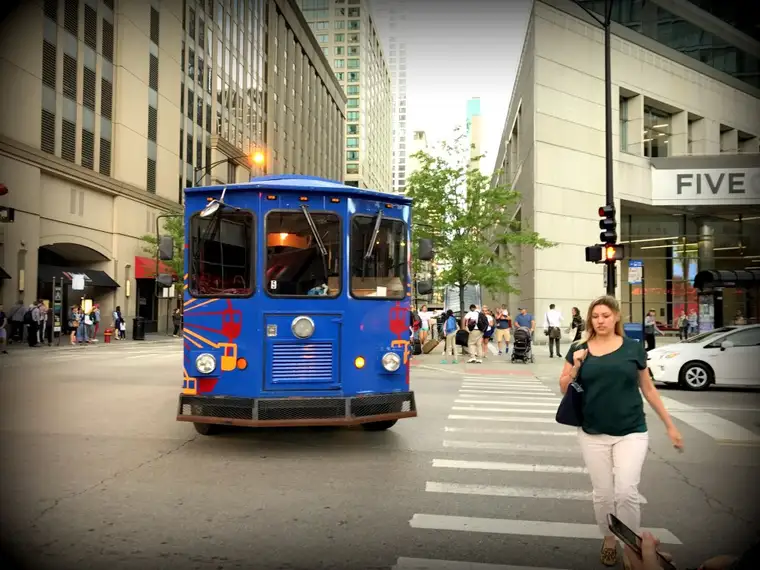
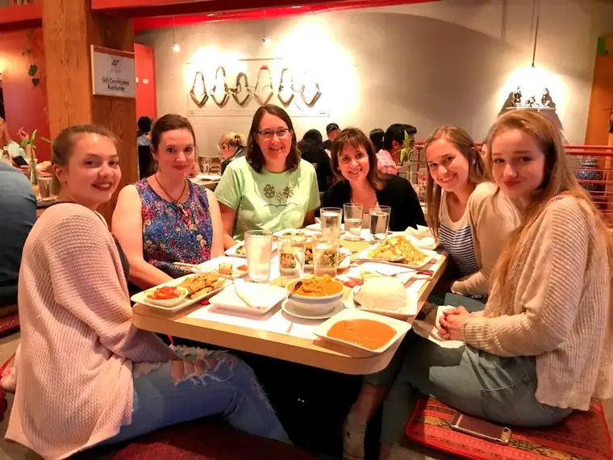
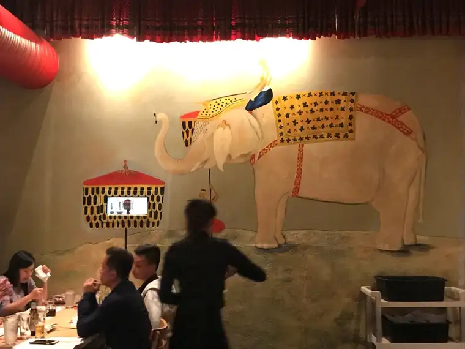
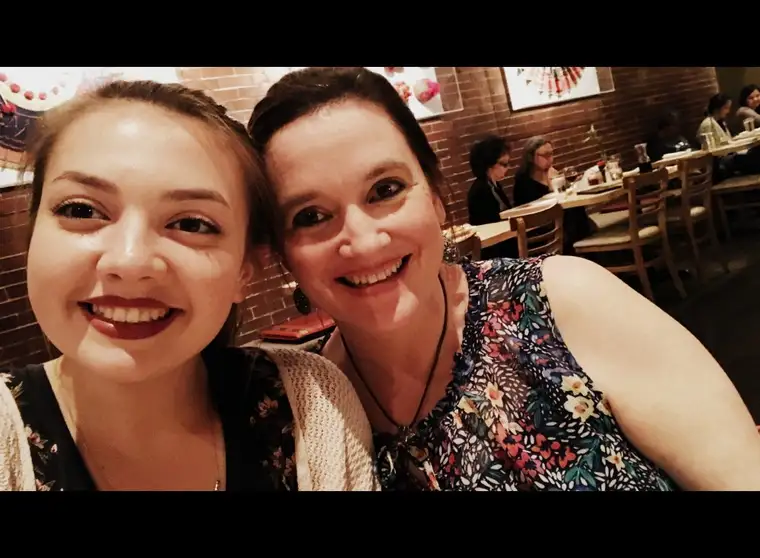
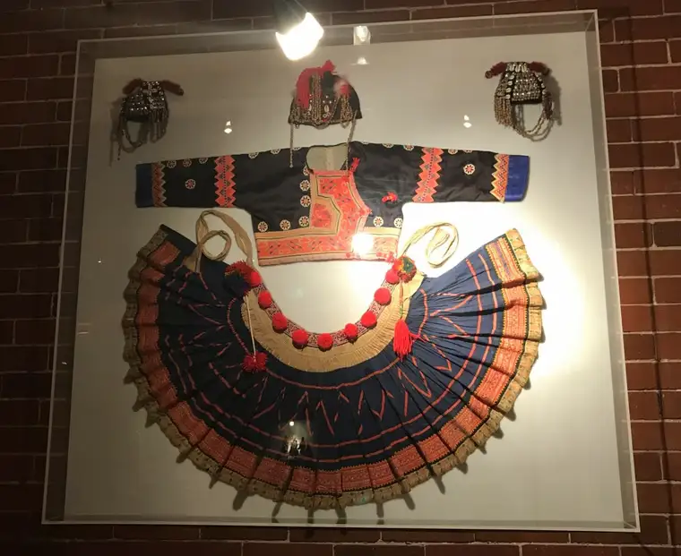
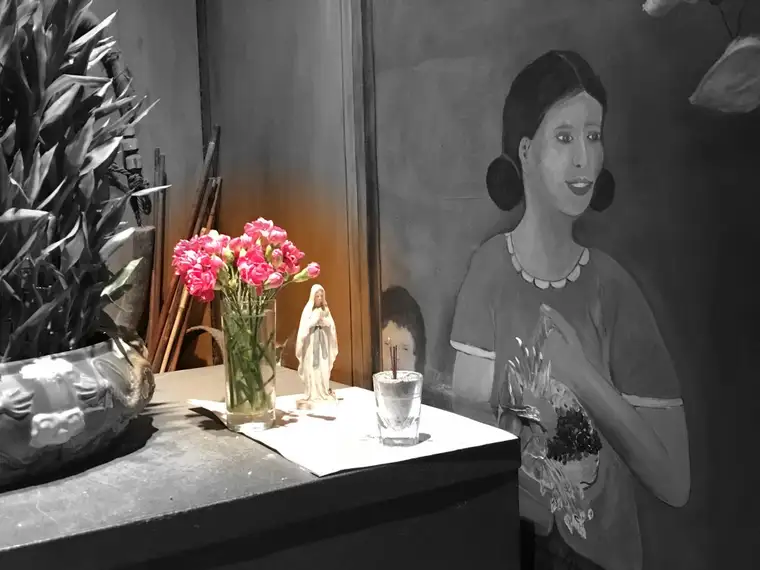

Believe it or not, we’re still on Day 2. My last post jumped ahead to ruminate over a church visit, but now, we do a double rewind to get caught up.
Part of what made staying downtown so fabulous was just taking in the city sights. And in that regard, Chicago did not disappoint.
We’re from Fargo, after all, a nice-sized city with everything we need on a daily basis. But there is something about being in a major metropolis that is, from a visitor’s standpoint at least, very energizing. The life that greets one coming through town is a gift.
This has to be one of my favorites of the girls. I especially like “Chica 3s” upward glance — a bit Mary Tyler Moore-ish, or something.

By the way, the whole “Chica” reference came during the planning of our trip. In a group text, one of the daughters named our clan “Chi-Town Chicas.” Later, they didn’t seem to like when we called them chicas, but for us mamas, it stuck.
The Chica Mamas needed our own version…

This day had included, you might recall, tantalizing gazes at the Tiffany dome and many other artistic creations. We were filled up, and ready to wind down a bit with the city. After meandering back toward the hotel…

And discovering the free trolley that would take us to the pier the next day…

It was time to refresh and get ready for a fabulous Thai meal. The restaurant, Star of Siam, was just a few blocks away.

We decided to share, including the mango-sticky rice dessert. Our fun floor-level Thai table made everything more interesting.

The decor had charm as well.



But the best discovery happened at the end, as I waited for our group to get back into its huddle to head out the door. There she was, on a little table, hidden, yet not to my eye. Mary, mother of God, had whispered to me. Seeing her brought comfort, and the reminder again that God follows us wherever we go in this life. And that is no inconsequential comfort.

I’m keeping this post short. Next, we explore the pier, and there was so much there to enjoy, not to mention a sweet little reprieve afterward. Thanks so much for revisiting our journey with me! It’s a delight to have you along this time around.
Q4U: Where did God show up in your day?